전자기사 (2016-05-08 기출문제)
1과목: 전기자기학
1. 자기모멘트 9.8×10-5[Wbㆍm]의 막대자석을 지구자계의 수평성분 10.5[AT/m]인 곳에서 지자기 자오면으로부터 90° 회전시키는데 필요한 일은 약 몇 J 인가?
- 1.03×10-3
- 1.03×10-5
- 9.03×10-3
- 9.03×10-5
(정답률: 53%)

2. 그림과 같이 반지름 10[cm]인 반원과 그 양단으로부터 직선으로 된 도선에 10[A]의 전류가 흐를 때. 중심 0에서의 자계의 세기와 방향은?
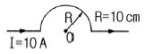
- 2.5[AT/m], 방향 ⊙
- 25[AT/m], 방향 ⊙
- 2.5[AT/m], 방향 ⊗
- 25[AT/m], 방향 ⊗
(정답률: 52%)
3. 전자파의 특성에 대한 설명으로 틀린 것은?
- 전자파의 속도는 주파수와 무관하다.
- 전파 Ex를 고유임피던스로 나누면 자파 Hy가 된다.
- 전파 Ex와 자파 Hy의 진동방향은 진행 방향에 수평인 종파이다.
- 매질이 도전성을 갖지 않으면 전파 Ex와 자파 Hy는 동위상이 된다.
(정답률: 50%)
4. 무한히 넓은 두 장의 평면판 도체를 간격 d(m)로 평행하게 배치하고 각각의 평면판에 면전하밀도 ±σ(C/m2)로 분포되어 있는 경우 전기력선은 면에 수직으로 나와 평행하게 발산한다. 이 평면판내부의 전계의 세기는 몇 V/m 인가?
- σ/Є0
- σ/2Є0
- σ/2πЄ0
- σ/4πЄ0
(정답률: 41%)
5. 패러데이 관에 대한 설명으로 틀린 것은?
- 관내의 전속수는 일정하다.
- 관의 밀도는 전속밀도와 같다.
- 진전하가 없는 점에서 불연속이다.
- 관 양단에 양(+), 음(-)의 단위전하가 있다.
(정답률: 62%)
6. 쌍극자모멘트가 M(Cㆍm)인 전기쌍극자에서 점 P의 전계는
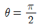
에서 어떻게 되는가? (단, θ는 전기쌍극자의 중심에서 축 방향과 점 P를 잇는 선분의 사이 각이다.)- 0
- 최소
- 최대
- -∞
(정답률: 44%)
7. 평행판 콘덴서에 어떤 유전체를 넣었을 때 전속밀도가 4.8×10-7[C/m2]이고 단위체적당 정전에너지가 5.3×10-3[J/m3 ]이었다. 이 유전체의 유전율은 몇 F/m 인가?
- 1.15×10-11
- 2.17×10-11
- 3.19×10-11
- 4.21×10-11
(정답률: 56%)
8. 환상 철심에 권선수 20인 A코일과 권선수 80인 B코일이 감겨 있을 때, A코일의 자기인덕턴스가 5[mH]라면 두 코일의 상호인덕턴스는 몇 mH인가? (단, 누설자속은 없는 것으로 본다.)
- 20
- 1.25
- 0.8
- 0.⑤
(정답률: 53%)
9. 다음 식 중에서 틀린 것은?
- 가우스의 정리 : divD=ρ
- 포아송의 방정식 :

- 라플라스의 방정식 : ▽2V=0
- 발산의 정리 :

(정답률: 59%)
10. 자기회로에서 키르히호프의 법칙에 대한 설명으로 옳은 것은?
- 임의의 결합점으로 유입하는 자속의 대수합은 0이다.
- 임의의 폐자로에서 자속과 기자력의 대수합은 0이다.
- 임의의 폐자로에서 자기저항과 기자력의 대수합은 0이다.
- 임의의 폐자로에서 각 부의 자기저항과 자속의 대수합은 0이다.
(정답률: 58%)
11. W1과 W2의 에너지를 갖는 두 콘덴서를 병렬 연결한 경우의 총 에너지 W와의 관계로 옳은 것은? (단, W1≠W2이다.)(오류 신고가 접수된 문제입니다. 반드시 정답과 해설을 확인하시기 바랍니다.)
- W1+W2=W
- W1+W2＞W
- W1-W2=W
- W1+W2＜W
(정답률: 22%)
12. 한 변이 L(m)되는 정사각형의 도선회로에 전류 I(A)가 흐르고 있을 때 회로 중심에서의 자속밀도는 몇 Wb/m2 인가?
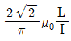
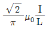
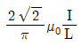
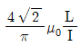
(정답률: 58%)
13. 자유공간 중에 x=2, z=4인 무한장 직선상에 ρL(C/m)인 균일한 선전하가 있다. 점(0,0,4)의 전계 E(V/m)는?
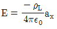
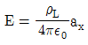
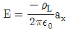
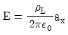
(정답률: 35%)
14. 압전효과를 이용하지 않은 것은?
- 수정발진기
- 마이크로폰
- 초음파발생기
- 자속계
(정답률: 66%)
15. 단면적 S(m2), 단위 길이당 권수가 n0(회/m)인 무한히 긴 솔레노이드의 자기인덕턴스(H/m)를 구하면?
- μSn0
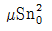
- μS2n0
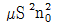
(정답률: 58%)
16. 표피효과에 대한 설명으로 옳은 것은?
- 주파수가 높을수록 침투깊이가 얇아진다.
- 투자율이 크면 표피효과가 적게 나타난다.
- 표피효과에 따른 표피저항은 단면적에 비례한다.
- 도전율이 큰 도체에는 표피효과가 적게 나타난다.
(정답률: 45%)
17. 그림과 같은 원통상 도선 한 가닥이 유전율 ε(F/m)인 매질 내에 지상 h(m) 높이로 지면과 나란히 가선되어 있을 때 대지와 도선간의 단위길이당 정전용량(F/m)은?
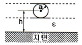
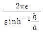
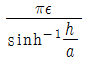
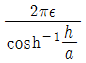
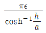
(정답률: 43%)
18. 두 종류의 유전율(Є1, Є2)을 가진 유전체 경계면에 진전하가 존재하지 않을 때 성립하는 경계조건을 옳게 나타낸 것은? (단, θ1, θ2는 각각 유전체 경계면의 법선벡터와 E1, E2가 이루는 각이다.)
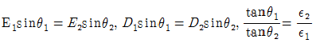
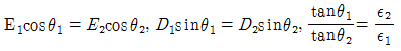
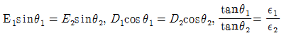
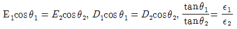
(정답률: 74%)
19. 감자력이 0인 것은?
- 구 자성체
- 환상 철심
- 타원 자성체
- 굵고 짧은 막대 자성체
(정답률: 56%)
20. 전위 V=3xy+z+4일 때 전계 E는?
- i3x+j3y+k
- -i3y+j3x+k
- i3x-j3y-k
- -i3y-j3x-k
(정답률: 45%)
2과목: 회로이론
21. 직렬공진 대역통과 필터에서 공진주파수에서의 최대 전류가 20[mA]일 때 차단 주파수에서의 전류값은 몇 mA 인가?
- 0.707
- 10
- 14.14
- 20
(정답률: 45%)
22. 감쇄되지 않고 잘 통과되는 주파수 범위를 나타내는 것은?
- 저지 대역
- 차단 주파수
- 통과 대역
- 대역폭
(정답률: 67%)
23. 이상적인 변압기의 조건으로 옳은 것은?
- 두 코일의 결합계수가 1인 경우
- 유도 결합이 없는 경우
- 상호 자속이 전혀 없는 경우
- 결합 계수 K가 0인 경우
(정답률: 55%)
24. 그림과 같은 브리지 회로가 평형이 되기 위한
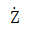
의 값은? (단, G는 검류계이다.)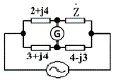
- 2+j4
- -2+j4
- 4+j2
- 4-j2
(정답률: 55%)
25. 리액턴스 함수가
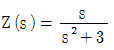
으로 표시되는 리액턴스 2 단자망에 대한 설명 중 틀린 것은?- L=1/3이다.
- C=1이다.
- L-C병렬회로이다.
- Z(s)는 시간 함수이다.
(정답률: 48%)
26. t의 함수 f(t)=f(-t)의 조건을 만족할 때 f(t)는?
- 기함수
- 우함수
- 정현대칭함수
- 복소함수
(정답률: 60%)
27. 그림과 같은 L형 회로에 대한 영상 임피던스 Z01과 Z02을 구하면?
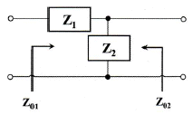
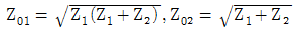
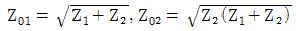
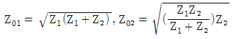
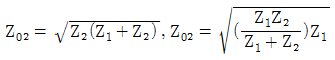
(정답률: 50%)
28.
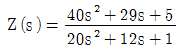
로 주어지는 2단자 회로망에 직류 전압 5[V]를 인가 시 회로망에 흐르는 정상상태에서의 전류는 몇 A 인가? (단, s+jw이다.)- 1
- 2.5
- 5
- 10
(정답률: 43%)
29. 그림의 회로에서 t=0일 때 a에 닫혀 있는 스위치를 b로 전환하였을 때 저항에 흐르는 전류는?
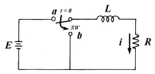
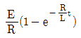
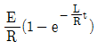
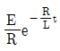
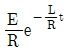
(정답률: 13%)
30. 100[V], 30[W]의 형광등에 100[V]를 가했을 때, 0.5[A]의 전류가 흐르고 그 소비전력이 25[W]이면 이 형광등의 역률은 몇 % 인가?
- 50
- 63
- 75
- 86
(정답률: 48%)
31. 그림의 회로에서 독립적인 전류방정식 N과 독립적인 전압방정식 B는 몇 개인가?
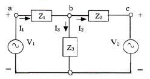
- N=2, B=3
- N=1, B=2
- N=2, B=2
- N=3, B=2
(정답률: 30%)
32. 델타 함수의 시간 지연인 δ(t-t0)의 Fourier 변환은?
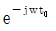
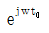
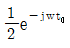
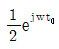
(정답률: 43%)
33. 무손실 분포정수 선로의 특성 임피던스 ZO는?
- 1
- 1/√LC
- √L/C
- L/C
(정답률: 53%)
34. R-L 직렬회로에서 L은 0.4[H], R은 2[Ω]일 때 시정수는 몇 ms 인가?
- 800
- 200
- 0.8
- 0.2
(정답률: 40%)
35. 이상적인 전압원의 내부 임피던스 Z는?
- 0
- ∞
- 1Ω
- 정해지지 않는다.
(정답률: 53%)
36. 대칭 4단자 망에 관한 내용으로 옳은 것은?
- 반복 임피던스는 √BC 이다.
- 영상 임피던스는 √B/C 이다.
- 반복 임피던스는 √BC/AD 이다.
- 영상 임피던스는 √AD 이다.
(정답률: 35%)
37. 다음 회로가 모든 주파수에서 공진하기 위한 저항 R의 값은 몇 Ω 인가?
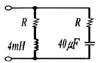
- 2
- 5
- 10
- 25
(정답률: 57%)
38. 콘덴서와 코일에서 실제로 급격히 변화할 수 없는 것은?
- 코일에서 전류, 콘덴서에서 전류
- 코일에서 전압, 콘덴서에서 전압
- 코일에서 전압, 콘덴서에서 전류
- 코일에서 전류, 콘덴서에서 전압
(정답률: 45%)
39. 어떤 콘덴서의 회로에 커패시턴스를 2배로 하고, 주파수를 1/5로 하면 흐르는 전류는 어떻게 되는가? (단, 커패시턴스 양단 전압은 일정하다.)
- 1/5로 줄어든다.
- 2/5로 줄어든다.
- 2배로 증가한다.
- 4배로 증가한다.
(정답률: 63%)
40. 그림과 같은 삼각파의 파고율은?
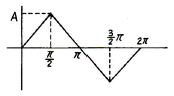
- 1.15
- 1.73
- 1
- 1.41
(정답률: 57%)
3과목: 전자회로
41. 논리 게이트 중 Fan-out이 가장 큰 것은?
- RTL(Resistor-Transistor-Logic) 게이트
- TTL(Transistor-Transistor-Logic) 게이트
- DTL(Diode-Transistor-Logic) 게이트
- DL(Diode-Logic) 게이트
(정답률: 38%)
42. 발진기 회로의 발진 조건은?
- 귀환 루프의 위상지연이 0°이다.
- 귀환 루프의 이득이 0이다.
- 귀환 루프의 위상지연이 180°이다.
- 귀환 루프의 이득이 1/3이다.
(정답률: 32%)
43. 전가산기를 구성할 때 필요한 게이트는?
- X-OR 1개, AND 2개, OR 2개
- X-OR 2개, AND 1개, OR 2개
- X-OR 2개, AND 2개, OR 1개
- X-OR 2개, AND 2개, OR 2개
(정답률: 58%)
44. B급 푸시풀 증폭기 회로에서 최대 평균전력은 몇W 인가?
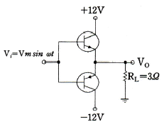
- 6
- 12
- 24
- 37.5
(정답률: 22%)
45. 트랜지스터의 컬렉터 전류에 대한 설명으로 옳은 것은?
- 컬렉터 전류는 베이스 전류보다 작다.
- 컬렉터 전류는 이미터 전류보다 작다.
- 컬렉터 전류는 이미터 전류와 베이스 전류를 합한 것과 같다.
- 컬렉터 전류는 이미터 전류와 베이스 전류를 합한 것보다 크다.
(정답률: 45%)
46. 계수기의 현재 출력이 QA=0, QB=1, QC=1일 때 그 다음 출력으로 가장 적합한 것은?
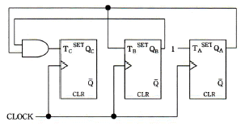
- QA=0, QB=1, QC=0
- QA=0, QB=0, QC=0
- QA=1, QB=0, QC=0
- QA=0, QB=1, QC=1
(정답률: 43%)
47. 연산증폭기 회로에서 R1=10[kΩ], R2=100[kΩ]일 때 귀환율(β)은 약 얼마인가?
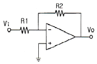
- 0.01
- 0.09
- 0.12
- 0.9
(정답률: 32%)
48. 그림과 같은 회로의 발진 주파수는 약 몇 kHz 인가? (단, C1=200pF, C2=100pF, L=10mH, π=3.14이다.)
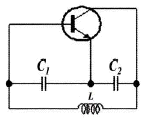
- 535
- 107
- 273
- 195
(정답률: 29%)
49. 푸시풀(push-pull) 전력 증폭기가 왜곡이 적은 큰 출력을 얻을 수 있는 주된 원인은?
- 직류성분이 상쇄되어 없어지므로
- 기수(홀수) 고조파가 상쇄되어 없어지므로
- 우수(짝수) 고조파가 상쇄되어 없어지므로
- 기수 고조파와 우수 고조파가 상쇄되어 없어지므로
(정답률: 39%)
50. 연산 증폭기 회로에서 부귀환을 사용하여 얻을 수 있는 장점이 아닌 것은?
- 개선된 비선형성
- 넓은 대역폭
- 안정된 제어 이득
- 입ㆍ출력 임피던스 제어
(정답률: 34%)
51. 그림의 회로에서 부하 저항 RL에 흐르는 전류는 몇 mA 인가?
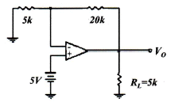
- 1.5
- 4
- 5
- 25
(정답률: 35%)
52. 연산증폭기의 응용 회로가 아닌 것은?
- 적분기
- 미분기
- 비교기
- 디지털 반가산기
(정답률: 45%)
53. MOSFET로 구성된 다음 회로는 어떤 논리 게이트인가? (단, 회로에서 Q1과 Q2는 p 채널이고, Q3과 Q4는 n 채널이다.)
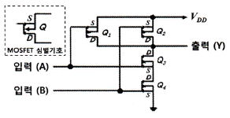
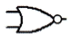
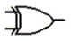
(정답률: 46%)
54. 적분기와 미분기의 귀환 소자를 옳게 나열한 것은?
- 적분기 : 저항, 미분기 : 커패시터
- 적분기 : 커패시터, 미분기 : 저항
- 적분기 : 제너다이오드, 미분기 : 저항
- 적분기 : 커패시터, 미분기 : 커패시터
(정답률: 48%)
55. 그림과 같은 콘덴서 입력형 π형 필터에서 작은 맥동률이 나타나게 설계하기 위한 L, C의 값으로 옳은 것은?
- L과 C를 크게 한다.
- L과 C를 작게 한다.
- L를 크게 하고, C는 작게 한다.
- L를 작게 하고, C는 크게 한다.
(정답률: 53%)
56. 회로도에 대한 설명으로 옳은 것은?
- 저역통과필터
- 고역통과필터
- 대역통과필터
- 대역저지필터
(정답률: 46%)
57. 그림과 같은 RC회로에 입력 Vi가 공급될 때 출력 Vo는?
(정답률: 66%)
58. 전력 이득을 가장 크게 얻을 수 있는 결합 방식은?
- RC 결합
- 변성기 결합
- 임피던스 결합
- 이득이 모두 같다.
(정답률: 28%)
59. 이미터 플로워(Emitter Follower) 증폭기에서 입력 신호에 대하여 그림과 같은 출력 전류 신호를 얻었다면 어떤 방식에 해당되는가?
- A급
- B급
- AB급
- C급
(정답률: 42%)
60. 정전압 전원회로에서 무부하시의 단자전압이 13[V], 전부하일 때의 단자전압이 10[V]라면 전압변동률은 몇 % 인가?
- 10
- 20
- 30
- 40
(정답률: 45%)
4과목: 물리전자공학
61. Pauli의 배타율 원리에 대한 설명으로 틀린 것은?
- 원자내의 전자 배열을 지배하는 원리이다.
- 원자내에서 두 개의 전자가 동일한 양자 상태에 있을 수 있다.
- 하나의 양자 궤도에 spin이 다른 두 개의 전자가 존재할 수 있다.
- 원자내에 존재하는 어떠한 전자도 네 개의 양자수가 전부 같을 수는 없다.
(정답률: 53%)
62. 반도체에 전계(E)를 가하면 정공의 드리프트(drift) 속도 방향은?
- 전계와 반대 방향이다.
- 전계와 같은 방향이다.
- 전계와 직각 방향이다.
- 전계와 무관한 불규칙 방향이다.
(정답률: 41%)
63. 기체 중에서 방전 현상은 어느 현상에 해당하는가?
- 전리 현상
- 복사 현상
- 광전 효과
- 절연 파괴
(정답률: 46%)
64. 실리콘 PN 접합에서 단면적이 0.1[mm2], 공간전하 영역 폭이 2×10-4[cm]일 때 공간전하 용량은 약 얼마인가? (단, Si의 비유전율은 12, ε0=8.85×10-12[F/m])
- 5.31[pF]
- 53.1[μF]
- 0.531[μF]
- 5.31[μF]
(정답률: 40%)
65. 정공의 확산계수를 Dp, 정공의 확산거리가 Lp로 주어졌을 때, 정공의 평균수명시간 τp를 나타낸 식은?
(정답률: 22%)
66. 페르미준위 Ef에서 진성 반도체의 Fermi-Dirac 분포 함수의 값은?
- 0
- 0.5
- 0.25
- 1
(정답률: 48%)
67. PN 접합 양측에 불순물 함유량이 많을 경우에 일어나는 현상이 아닌 것은?
- 공핍층의 폭이 넓어진다.
- 터널현상이 발생하기도 한다.
- 접합부분에서 P형의 가전자 대역과 N형 전도대역 사이의 거리가 감소한다.
- 낮은 역방향 전압에서도 역방향 전류가 급격히 증가한다.
(정답률: 15%)
68. 펀치 스루(punch-through) 현상에 대한 설명으로 옳지 않은 것은?
- 베이스 중성 영역이 없는 상태이다.
- 컬렉터 역바이어스를 충분히 증가시킨 경우이다.
- 베이스 영역의 저항률이 높을수록 펀치 스루현상을 일으키는 컬렉터 전압은 높아진다.
- 회로에 적당한 직렬저항을 접속하지 않으면 트랜지스터가 파괴된다.
(정답률: 35%)
69. 다음 중 어떤 에너지 준위에 입자가 존재할 확률을 의미하는 분포함수가 아닌 것은?
- Bose-Einstein 분포함수
- Maxwell-Boltzmann 분포함수
- Fermi-Dirac 분포함수
- De-Broglie 분포함수
(정답률: 48%)
70. 터널 다이오드(tunnel diode)의 설명 중 틀린 것은?
- 부성 저항 특성을 나타낸다.
- 마이크로파 발진용으로 사용된다.
- 공간 전하층이 일반 다이오드보다 넓다.
- 역바이어스 상태에서 전도성이 양호하다.
(정답률: 29%)
71. 트랜지스터의 제조에서 에피택시얼 층(epitaxia layer)이 많이 사용되는 이유는?
- 베이스 전극을 만들기 위해서
- 베이스 영역을 좁게 만들기 위해서
- 낮은 저항의 이미터 영역을 만들기 위해서
- 낮은 저항의 기판에 같은 도전성 형태를 가진 높은 저항의 컬렉터 영역을 만들기 위해서
(정답률: 30%)
72. Fermi 준위에 대한 설명으로 올바른 것은?
- 진성반도체의 Fermi 준위는 전도대의 중앙에 위치한다.
- n형 반도체의 Fermi 준위는 불순물 농도와 상관없이 일정하다.
- 진성반도체의 Fermi 분위는 온도에 관계없이 일정하다.
- p형 반도체의 Fermi 준위는 불순물 농도와 상관없이 일정하다.
(정답률: 53%)
73. 진성 반도체에 대한 설명 중 틀린 것은?
- 반도체의 저항 온도계수는 양(+)이다.
- 운반체(carrier)의 밀도는 온도가 상승하면 증가한다.
- Fermi 준위는 온도와 관계없이 금지대의 중앙에 위치한다.
- 전자의 농도와 정공의 농도는 같다.
(정답률: 40%)
74. 빛의 파장이 1[Å]일 때 광자의 에너지는?
- 6.625×10-34[J]
- 6.625×10-24[J]
- 1.988×10-17[J]
- 1.988×10-15[J]
(정답률: 14%)
75. pn접합 다이오드의 확산 용량(diffusion capacitance)에 관한 설명으로 옳은 것은?
- 공간 전하에 의한 용량이다.
- 다수 캐리어의 확산작용에 의한 용량이다.
- 순바이어스에 의하여 주입된 소수 캐리어에 의한 용량이다.
- 역바이어스에 의한 소수 캐리어의 확산작용에 의한 용량이다.
(정답률: 15%)
76. 쌍극성 접합 트랜지스터(BJT)를 베이스 접지하고 컬렉터 전압을 일정하게 유지하며 이미터 전류를 4[mA] 변화시킬 때 컬렉터 전류가 3.8[mA] 변화하였다. 이 트랜지스터의 전류 증폭률 α와 β는?
- α=0.95, β=19
- α=9.5, β=1.9
- α=95, β=0.19
- α=9.5, β=19
(정답률: 50%)
77. 금속의 광전자 방출에 관한 설명으로 옳은 것은?
- 방출된 전자의 에너지는 빛의 세기에 비례한다.
- 방출된 전자의 에너지는 금속의 일함수에 비례한다.
- 방출된 전자의 에너지는 빛의 주파수에 비례한다.
- 금속 내에서는 일함수가 없으므로 입사광 에너지가 모두 방출된다.
(정답률: 21%)
78. 평형 상태에서 n형 불순물 반도체의 홀(hole) 농도를 나타낸 것은? (단, ni: 진성반도체의 캐리어 밀도 Nd: 도너 농도이다.
(정답률: 42%)
79. 핀치오프 전압 VP이 -4[V]이고, VGS가 0일 때 드레인 전류 IDSS가 8[mA]인 JFET에서 VGS가 -1.8[V]일 때 드레인 전류는 몇 mA 인가?
- 2.4
- 3.2
- 3.9
- 4.3
(정답률: 53%)
80. 페르미(Fermi) 준위가 금지대의 중앙에 위치하여 자유전자와 정공의 농도가 같은 반도체는?
- 불순물 반도체
- 순수 반도체
- P형 반도체
- N형 반도체
(정답률: 42%)
5과목: 전자계산기일반
81. 프로그래밍 언어 중 객체지향언어가 아닌 것은?
- C#
- GWBASIC
- JAVA
- C++
(정답률: 62%)
82. 데이터 버스 폭이 32비트이고 버스 클럭 주파수가 10[MHz]일 때 버스 대역폭은?
- 32[Mbyte/sec]
- 40[Mbyte/sec]
- 320[Mbyte/sec]
- 400[Mbyte/sec]
(정답률: 37%)
83. 처리 능력을 향상시키기 위한 방법이 아닌 것은?
- 명령어 파이프라이닝 기법
- 인터럽트 처리
- 캐시기억장치
- 병렬처리
(정답률: 27%)
84. 인터럽트 동작의 수행 순서를 올바르게 나열한 것은?
- ⓑ → ⓐ → ⓓ → ⓒ
- ⓑ → ⓓ → ⓐ → ⓒ
- ⓓ → ⓑ → ⓐ → ⓒ
- ⓓ → ⓐ → ⓑ → ⓒ
(정답률: 56%)
85. 컴퓨터의 명령어 분류 방식에서 반드시 누산기(Accumulator)를 사용하는 방식은?
- 0-주소지정 방식
- 1-주소지정 방식
- 2-주소지정 방식
- 3-주소지정 방식
(정답률: 50%)
86. 외부 인터럽트(External Interrupt) 발생 원인이 아닌 것은?
- Machine Check Interrupt
- I/O Interrupt
- Program Check Interrupt
- Time Out Interrupt
(정답률: 28%)
87. 인터럽트 원인이 될 수 있는 것은?
- 정전(power failure)
- 서브루틴 call
- go to 문장 수행
- compile 시에 발생한 오류
(정답률: 35%)
88. 한 word가 24비트로 이루어지고 총 32768개의 word를 가진 기억장치가 있다. 이 기억장치를 사용하는 컴퓨터 시스템의 MBR(Memory Buffer Register), MAR(Memory Address Register), PC(Program Counter)에 필요한 각각의 비트수는?
- 24, 24, 24
- 24, 15, 24
- 24, 24, 15
- 24, 15, 15
(정답률: 35%)
89. CPU의 기본 구조가 아닌 것은?
- ALU(Arithmetic Logic Unit)
- 레지스터 세트
- RAM(Random Access Memory)
- 제어 유니트
(정답률: 50%)
90. 입ㆍ출력 데이터 전송 시 중앙처리장치의 레지스터를 경유하지 않고 수행되는 방식은?
- DMA
- I/O Interface
- Stove Control
- Interleaving
(정답률: 46%)
91. 다음 운영체제(OS)의 구성요소 중 제어 프로그램(Control Program)에 포함되지 않는 것은?
- Data management program
- Job management program
- Supervisor program
- Service program
(정답률: 36%)
92. 행의 수가 7이고 열의 수가 5인 7×5 이차원 배열(array) a의 각 자료의 위치는 a[행][열]로 표시한다. 행주도순서(row major order)를 사요하고 a[1][1]이 1번지일 때 a[3][4]는 몇 번지인가?
- 14
- 18
- 19
- 25
(정답률: 29%)
93. 자료의 내부적인 표현과 관련이 없는 것은?
- 스택(stack)
- 포인터(pointer)
- 큐(queue)
- 디큐(deque)
(정답률: 53%)
94. 어떤 특정한 비트 또는 분자를 삭제할 때 사용하는 연산은?
- AND
- OR
- XOR
- NOR
(정답률: 64%)
95. 2진수 데이터를 산술적 시프트(Shift)하여 오른쪽으로 4번 이동하면? (단, 읽어버린 비트와 새로 들어온 비트는 모두 0이다.)
- 시프트 이전 값이 곱하기 2-4 (2의 -4승)한 값이 된다.
- 시프트 이전 값이 곱하기 24 (2의 4승)한 값이 된다.
- 시프트하기 전 값의 4배가 된다.
- 시프트하기 전 값의 8배가 된다.
(정답률: 56%)
96. 16진수 A3B(16)를 10진수로 변환한 것은?
- 1269
- 2619
- 2916
- 2196
(정답률: 50%)
97. 복수 모듈 기억장치는 데이터를 전달할 때 어떤 개념을 사용하는가?
- Mapping
- Time-sharing
- Swapping
- Batch processing
(정답률: 27%)
98. 흐름도(Flow Chart)의 필요성으로 거리가 먼 것은?
- 프로그램의 흐름을 이해하기 쉽다.
- 프로그램을 수정하기 쉽다.
- 프로그램의 코딩이 쉽다.
- 프로그램의 길이를 조절할 수 있다.
(정답률: 43%)
99. 중앙처리장치의 네 가지 상태에 해당되지 않는 것은?
- fetch cycle
- branch cycle
- interrupt cycle
- execution cycle
(정답률: 48%)
100. 일반적인 명령어 형식을 나타낸 것은?
- 연산자(OP 코드)와 데이터
- 연산자(OP 코드)와 오퍼랜드(Operand)
- 오퍼랜드(Operand)와 데이터
- 데어터와 주소부
(정답률: 52%)
지자기 토크는 다음과 같이 구할 수 있다.
τ = mBsinθ
여기서 τ는 지자기 토크, m은 막대자석의 자기모멘트, B는 지구자계의 자기장 세기, θ는 막대자석과 지구자계의 자기장 세기 벡터 사이의 각도이다.
따라서, 지자기 토크는 다음과 같다.
τ = (9.8×10^-5)[Wbㆍm] × (10.5)[AT/m] × sin(90°) = 1.03×10^-3 [J]
따라서, 막대자석을 회전시키는데 필요한 일은 약 1.03×10^-3 J이다. 따라서, 정답은 "1.03×10^-3"이다.